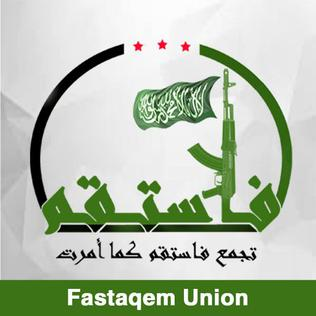

PAGE UNDER EDITING PHASE
الجيش السوري الحر
Free Syrian Army: The Revolutionary unit, taken over by extremists
It's Origins
On the 29th of July 2011, Riad alAsaad announced that 4 battalions united to form the Free Syrian Army, which would be lead by him.
These are the battalions(according to Riad alAsaad) were:
Hamza Ibn alKhatib battalion
Freedom Battalion
Saladin Battalion
alQashash Battalion
It's Units in March 2013, at the peak of the FSA
Fastaqim Union(Headquarted at Aleppo)
 Nour adDin azZinki Movement
Nour adDin azZinki Movement
Liwa Ahrar Souriya
Swords of Shahba Brigade
Northern Army
Liwa Suyuf ashSham
Banners of Islam Movement